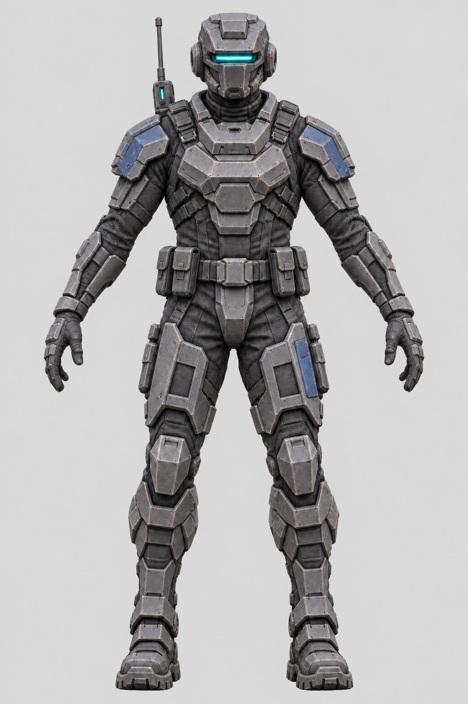

LEGIÃO SOLAR / MILITAR FUTURISTA
Voltar ao hangarDo conceito ao modelo 3D
Compare as referências de estilo com os modelos detalhados.

Carregando modelo e texturas…
Arraste para girar · use a roda para aproximar
Movimentos de espera, caminhada e ataque adaptados das animações disponíveis no jogo.